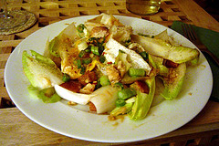

Smoked Eel II: The Salad!
Dva dana nakon uspesnog risotto-eksperimenta na red dolazi salata sa dimljenom jeguljom (smoked eel). Ovo je fenomenalna varijacija neke francuske salate kojoj sam zaboravio ime. U svakom slucaju smoked eel menja slaninu iz originalne recepture. Veoma je dopadljiva kombinacija svezine sastojaka i punoce ukusa smoked eel. Ako uz to dodamo veoma svez ukus rashladjenog Sauvignon Blanc-a iz Maipo doline, Chile ugodjaj je potpun. Ono sto je jos jedan plus je jednostavnost pripreme – nema sanse da salata ispadne lose, a takvi recepti su realno super.
Salata koju sam ja koristio bila je endivia, mada ce svaka vrsta salate posluziti svrsi. Bitno je da je sveza. Ono sto, pored specificnog ukusa dimljene jegulje /smoked eel/ (dimljene ribe) i svezine salate, nosi ovo jelo jeste poseban sosic kojim cete salatu preliti na kraju. A sosic se sprema na pocetku i pusta se da odlezi u frizideru nekoliko sati (moze i celu noc, slobodno). Ovaj preliv je veoma jednostavan i sastoji se od jedne kasike sirceta (vinskog, mada moze i jabukovo, a kad malo bolje razmislim verovatno bi tamno balsamic sirce bilo idealno) dve kasike maslinovog ulja, jedna kasika obicnog ulja, jedne kasike senfa (zaista bi bilo dobro da bude pravi, moutarde de dijon) malo bibera, soli i dva cena zgnjecenog belog luka. Sve sastojke sipajte u malu teglu, zatvorite poklopac, dobro promuckajte i odlozite u frizider. Pripremite salatu i nakon sto je salata spremna vreme je da se spreme krutoni. Isecite jednu krisku hleba bez korica na kockice stranice 1cm. Zagrejte tiganj i u njemu malo ulja. Ubacite hleb i dobro proprzite dok hleb ne pocne da dobija zuckastu boju. Dodajte manje parce maslaca i nastavite da przite hleb jos jedan minut. Idealan trenutak da se doda malo majcine dusice (timijan, tim) bice neposredno po isteku tog minuta. Izrucite krutone na papirni ubrus. Salata zahteva i jedno posirano jaje (po osobi). Meni je taj deo bio malo heavy pa sam, umesto posiranja, izabrao da tiganj u kome sam spremao krutone jednostavno vratim na ugasenu ringlu, u njega lupim jedno jaje i poklopim ga. To je to, imam sve sto mi treba. Jegulja je ociscena i iseckana na komadice i sve je spremno da se upoznaju ona i on (ona salata, on jegulja). Dodajte u salatu krutone, jegulju i ugrubo promesajte. Ukoliko zelite mozeti iseckati malo mladog luka i dodati u salatu u ovom trenutku (ja volem, sta cu). Prelijte salatu sosicem koji je kulirao u frizideru (izbacite beli luk prethodno) i (nisam zaboravio) preko toga pazljivo stavite jaje (koje bi do sada trebalo da je przeno/dinstano/obareno/posirano taman kako treba). Ko voli da malo ljutne, zna se, biber i mlevena ljuta papricica (chili)...
TaraPaca Sauvignon Blanc potice iz Maipo doline, Chile, ugasenog vulkana na obroncima Anda, gde se povetarac sa Pacifika poigrava sa liscem vinove loze. Jedna od prednosti ovako izolovanog vinarskog regiona jeste da se neke bolesti, pre svih filoksera, tu nikada nisu pojavile. Nema potrebe naglasavati da je klima tu idealna, sastav zemljista savrsen a vode sa Anda ciste kao suza. Ovo vino ce svojim svezim notama i nagovestajem ukusa limuna istaci svezinu salate, a tragovi magije hrastove buradi u kojima je odlezalo godinu dana ce se savrseno uklopiti sa dimljenom jeguljom. Verujte mi na rec.
Komentari
Dobra bese salata. Sreca te nije bilo jegulja.
Maja | 06.11.06 11:35
 RSS feed
RSS feed
 sadržaji se objavljuju pod
sadržaji se objavljuju pod
Raportiram uspesnu implementaciju salate u varijanti sa dimljenim papalinama. Mmmm!